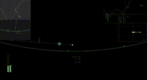

LABORATORY
OF
ANIMAL
BEHAVIOURAL
STRATEGIES


研究室の目的
本研究室は、人間を含めた多様な「動物」の行動戦略を探る研究室です。 動物たちの振る舞いの戦略的側面の理解の中から、新たな行動の合理性を導き出し、 私たちの社会や考え方にも示唆を与える知見を創出することを目的とします。
研究アプローチ
■研究の特色
本研究室の強みは、一般的な行動学研究環境に加え、 実証研究と理論研究をつなぐ独自の実験基盤を有していることにあります。 これは、仮想の動物と現実の動物とが相互作用するサイバーフィジカルシステムであり、 実際には起こり得ない理論上の行動や相互作用シナリオを擬似的に再現させる技術になります。
■研究展開の方面
行動の観察
フィールドワークによって、実際の動物がどのような環境でどのような行動をとっているのかを観察します。 様々な研究の根本としてしっかりと生態を押さえると共に、可能な限り定量的に観察することを目指します。 野山に赴くこともあれば、海に潜ることもあります。
行動戦略の実証的研究
一般的な行動学実験に加え、独自の仮想対面実験を行い、戦略の実態把握や理論検証を行います。 研究室内ではトンボ、魚、カエルを主に扱っており、 他大学でコウモリやハトを使わせてもらっています。 興味深い行動を行う動物がいれば、積極的に研究の題材にします。

行動戦略の理論研究
動物の行動の数理モデル化やシミュレーションを行うことで、 現実の行動の特長や優位性／脆弱性を推定すると共に、 最適戦略やそれへの対抗戦略を検討します。 特に、目標追跡や脅威回避に関するナビゲーションモデルを題材としています。

行動実験技術の開発
動物用の新規仮想現実技術を開発することで、行動戦略研究を支えます。 主にモーションキャプチャとリアルタイムフィードバック処理によって 相互作用を擬似的に成り立たせるものとなります。 動物種特有の知覚・形態・運動の特長にうまく対応させる必要があります。

研究成果
■研究業績
研究室代表者の研究成果等一覧については Researchmap をご覧ください。
この他、自然科学研究機構第14回若手研究者賞を受賞した際の受賞記念講演の動画を掲載します （高校生向けの内容となります）。
プロジェクト
■進行中の主要研究プロジェクト
- 2025-2032 JST 創発的研究支援事業（代表）「動物用メタバースによる横断的行動学研究」
- 2025-2028 JSPS 科研費 基盤研究B（代表）「捕食者と被食者のマルチタスク対処能力から探る生物集団形成の進化的要因」
- 2021-2026 JSPS 科研費 学術変革A 計画研究（分担）「階層ナビゲーションのための数理・学習ベース解析手法と介入方策決定技術」
■終了した主要研究プロジェクト（代表のみ抜粋）
- 2024-2024 学術変革領域（A）「階層的生物ナビ学」 国際活動支援班 海外派遣助成金「ハトの行動学実験に向けたVR映像提示技術の開発」
- 2022-2025 JSPS 科研費 特別研究員奨励費「コウモリに対する猛禽類の追跡ナビゲーション戦略：ロボット技術を用いたアプローチ」
- 2022-2022 JSPS 新学術領域「生物移動情報学」国際活動支援班 海外派遣助成金「猛禽類の餌追跡ナビゲーション能力の野外検証」
- 2021-2025 JSPS 科研費 若手研究「猛禽類の餌追跡ナビゲーションにおける戦略性の野外検証」
- 2019-2022 JSPS 科研費 特別研究員奨励費「捕食者によるParallel Navigation型獲物追跡運動の機能検証」
- 2019-2021 JSPS 科研費 新学術領域公募研究「飛行型捕食動物の目標追跡ナビゲーションにおける戦略性の検証と最適な追跡航法の導出」
- 2019-2020 文部科学省 ナノテクノロジープラットフォーム（協力研究）「無人航空機の誘導制御機構の開発」
- 2018-2021 JSPS 科研費 若手研究「捕食者によるParallel Navigation型獲物追跡運動の機能検証」
- 2016-2017 科学技術融合振興財団 調査研究補助金「小型魚類を対象とした、対捕食者相互作用シミュレータの開発」
- 2014-2015 日本科学協会 笹川科学研究助成金「ヘビに対するカエルの捕食回避戦略 − 逃走と不動の最適な使い分けの分析 −」
研究室への参加
当研究室では、研究に参加してくれる大学院生を募集しています。 また、日本学術振興会の特別研究員の受け入れや博士研究員の雇用にも積極的です。
■学振特別研究員受け入れ
申請計画の検討にあたって相談に乗ります。 また、申請期限間近の受け入れ打診であっても対応可能な場合がありますので、 気軽にご連絡ください。
■博士研究員雇用
主体的に研究が可能な方で、コンピュータスキルに長けた方を募集します。 詳しくは近日公開予定の J-Rec in の公募情報をご参照ください。
■大学院生受け入れ
本研究室で研究を行いたい方は是非一度研究室見学をするようにしてください。 研究テーマが明確に定まっていなくても構いませんので、 どんなことがやりたいか、何に興味を持てそうかなどをお聞かせいただければと思います。
本研究室は新潟大学自然科学研究科に属しています。 大学院入試の要項についても目を通しておくことを勧めます。
本研究室の代表教員（西海）はJST創発的研究支援事業に採択されているため、 大学院生には最大で年額240万円の生活支援が可能な場合があります。
コンタクト
■研究相談／研究室訪問はこちらまで
代表教員 西海 望（Nozomi Nishiumi, Ph.D.）
新潟大学 大学院自然科学研究科／創生学部 特任准教授
〒950-2181 新潟県新潟市西区五十嵐2の町8050
自然科学研究科 管理共通棟 311
Email: nishiumi［at］create.niigata-u.ac.jp（［at］を@に変えてください）
Tel: 025-262-7684